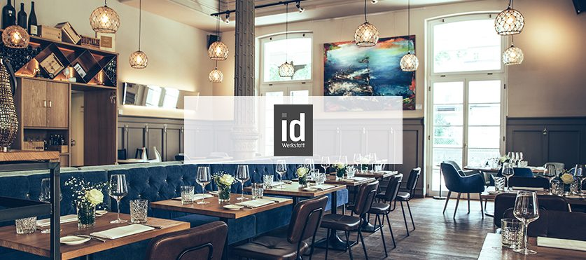
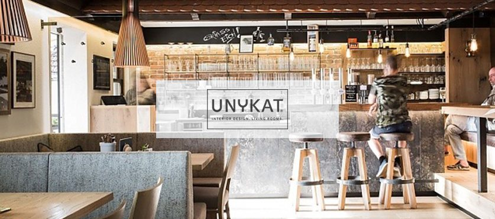
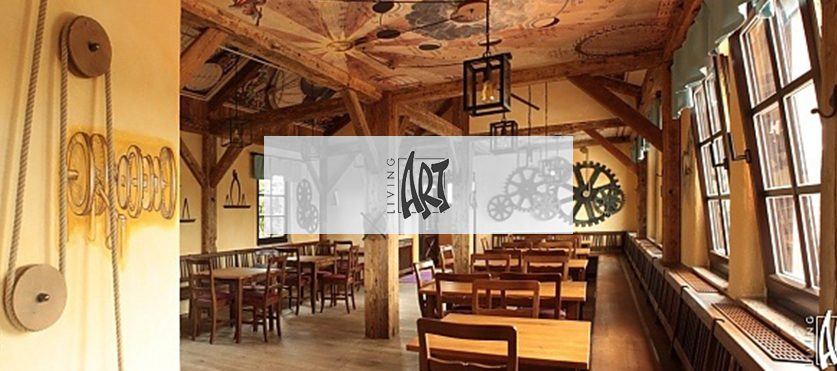
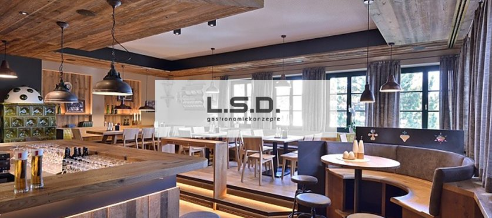

Gastronomie & Hotellerie
Wir realisieren B2B Ihren Erfolg – qualitativ und effizient. Seit 1983 arbeiten wir mit Gastronomie-Einrichtern, seit Jahren auch direkt mit Betreiberinnen und Betreibern.
Blatt 01 · Tischlerei Thanner
Bau- und Möbeltischlerei in Eberstalzell. Seit 1969 fertigen wir Möbel nach Maß für private Bauherren, Architektinnen, Hotellerie, Gastronomie und den Sonderbau – in Oberösterreich, in ganz Österreich und weit darüber hinaus.
Drei Arbeitsfelder
Wir realisieren B2B Ihren Erfolg – qualitativ und effizient. Seit 1983 arbeiten wir mit Gastronomie-Einrichtern, seit Jahren auch direkt mit Betreiberinnen und Betreibern.
Ein Team, das seit Jahrzehnten besteht. Mitarbeiter, die gerne arbeiten. Wir fertigen nach Plänen namhafter Architekten – und bringen auch Ihre Skizze in Form.
Mit modernster Maschinenausstattung garantieren wir höchste, industrielle Qualität und vielfältige Möglichkeiten in der Produktion – bis zur Kleinserie in Losgröße 1.
Möbel vom Tischler nach Maß
Der Werkstoff Holz legt immer wieder ungeahnte Möglichkeiten offen. Revolutionäre Designideen, sympathische Klassiker und Individualität gibt es nur vom Möbeltischler.
Wir fertigen Attraktives und Kreatives für die eigenen vier Wände, für Unternehmen aller Branchen, für die Hotellerie und Gastronomie sowie für zahlreiche weitere Bereiche. Als erfahrener Tischler im Raum Wels betreuen und begeistern wir Kundinnen und Kunden aus ganz Österreich sowie in vielen weiteren Ländern.
Haltung
Unserer Meinung nach hat eine Spanplatte als Küchenarbeitsplatte nichts verloren. Daher verwenden wir Mehrschichtplatten oder Naturstein als Arbeitsplatte in der Küche. Wir haben viele hochwertige, qualitative Lösungen für Sie.
Unsere Stärken liegen im hochwertigen Möbelbereich: liebevoll verarbeitetes Altholz, hochwertige Böden, furnierte Möbel. Produziert wird in Österreich, in unserer eigenen Werkstatt.

Aus der Werkstatt
Eine absolut sehenswerte Hafenkneipe nach dem Design von Living Art. Graffiti, Massivholz und tolle Möbel aus Leder machen die Kneipe so trendig und gemütlich. Top-Essen – was will das Herz mehr.
Betreiber Christoph Parzer bekocht seine Gäste im rundum erneuerten Restaurant in Wels. Eine tolle Location, der neu renovierte Bereich ist ein absoluter Hingucker.
Bekannt aus den Après-Ski-Hits von RTL2 und Kult seit 1989. Er besticht durch hochwertiges Design von Unykat aus Wels – beim Interior jagt ein Highlight das nächste.
Maßgeschneiderte Kleinserienfertigung, rational und präzise. Zu Beginn hat „ausgespielt“ die Trommel selbst gefertigt – dank unserem Know-how und unseren technischen Möglichkeiten fertigen wir die Trommelmöbel heute im Haus.
Referenzen nach Kunden



Nächster Schritt
Fertige Pläne von Ihnen sind super. Natürlich bringen wir auch Skizzen in Form. Je detaillierter Ihre Vorgaben, desto genauer das Angebot.